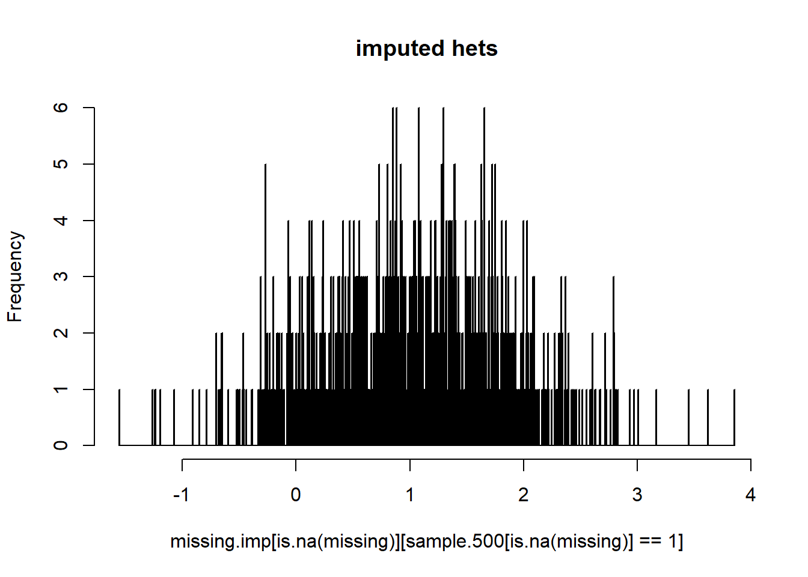
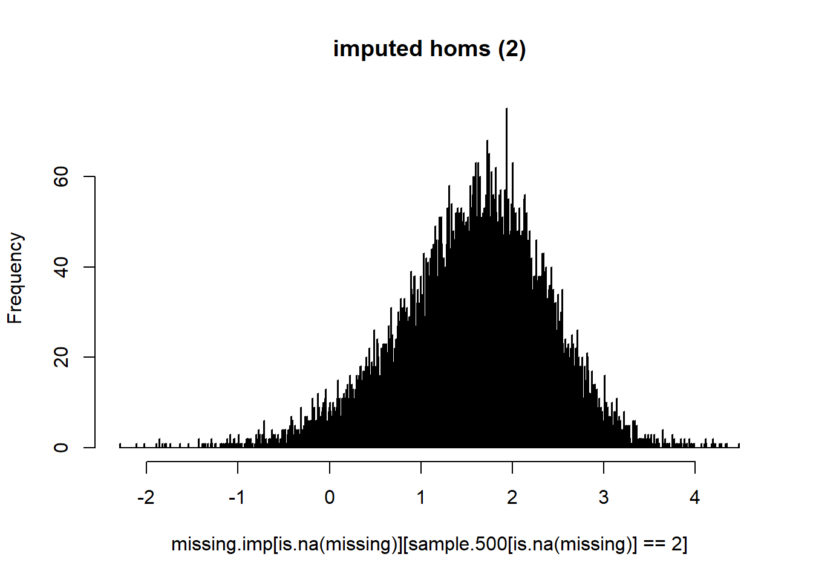
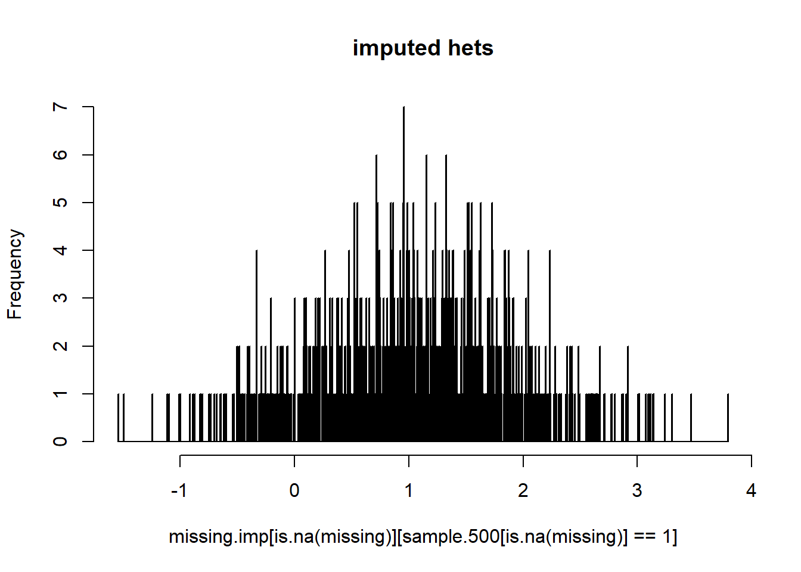

Chapter 8 Imputation.
8.1 Introduction
Marker data almost always come with missing values. When working with a small number of values, say regressing a phenotype on a single marker, this is not a problem: the records with the missing data are simply dropped from the analysis. However, with very many markers, and in analyses which work on multiple markers simultaneously, this does cause problems. For example, computation of kinship from a marker set with missing data can result in a matrix which does not invert. Many methods using genomic selection also require complete data.
For this purpose, methods have been adapted to fill in the missing values with a best guess, and then analyses proceed as if the data were complete. The validity of using these imputed data as if they were real is questionable: if the imputation is accurate, then there is no problem, but with increasing inaccuracy come enhanced Type I and Type II error rates; significance tests assume you have more data than is true. Also, biased imputation (of heterozygotes for one of the homozygous classes say) could act to increase or reduce power – it is hard to predict which.
There are other uses of imputation. If we knew one marker could be perfectly predicted from a set of others, there would be no requirement to genotype it. Over the whole genome, this can save a lot of genotyping. This approach is described as “haplotype tagging” or SNP tagging. Imputation can also be used to search for genotype errors: where a predicted SNP call disagrees with the observed call this may indicate bad data rather than bad prediction. This is akin to the use of observed double recombinants in linkage analysis as indicators of genotyping error. Finally, in genotyping by sequencing, individuals are sequenced with very low coverage to keep costs down. Very many SNPs are detected but with a massive missing data problem. However, because the SNP density is so high there are always SNPs in high LD with each other that can be used to patch-in the missing data. That’s the theory anyway.
There are specific methods for imputation of SNP data. These rely on having a genetic or physical map and explicitly or implicitly model linkage disequilibrium. These are much used in human genetics with very high densities of markers. Marchini and Howie (2010) give a review of methods and software.
For many of the datasets we have available we don’t have an adequate genetic map so these methods cannot be applied. In addition, I am uncertain how well they perform with errors in map order or in allocation of markers to linkage groups, or whether the marker density used in many crops is adequate for their successful application. This is an area of active research.
Fortunately, imputation is not restricted to genetic applications so generic methods can also be used. It is some of these which we shall look at today. We’ll first describe three possible approaches to imputation.
Mean: replace the missing marker genotype with the mean allele frequency (or twice the allele frequency for diploids). This isn’t strictly imputation. It has the merit of being quick and easy. It is also probably adequate for many purposes where significance testing and/or precise estimation of effects are not necessary. Examples would be in computation of kinship matrices and in genomic prediction.
Singular value decomposition (SVD): approximates the missing values from the first n row and column eigenvectors and values. This is not straight forward since SVD requires a complete matrix in the first place, so an initial guess at the missing values, usually the column means, is first made, followed by prediction from SVD, often with iteration until the prediction of the missing values stabilises.
Random Forest: This method is based on decision trees. A decision tree is a classification or regression system whereby data for an outcome variable are repeatedly split into smaller subsets on the basis of an optimally selected threshold of an optimally selected predictor. At each split different predictors/thresholds are selected. Subsequently, given data on the predictors, by following the tree through these splits, an estimate of the outcome variable is made. A random forest is a resampling method whereby multiple decision trees are built from bootstrapped samples of the data. For each bootstrapped dataset, at each split, a different subset of predictors is sampled at random from which the optimal predictor/threshold for that subset is then selected. The final set of random forest predictions is just the average of the predictions from each tree. The resampling ensures that the random forest predictions are more robust than those from single trees.
For more on these and other contemporary approaches to handling large data sets see James et al. (2013) for more details. A pdf is also available free online but it’s worth buying.
8.2 The exercise
The aims of today’s exercise are:
Compare the different imputation approaches.
Examine how accuracy of imputation decreases with decreasing LD among the markers.
We are going to work on a subset of data from a NIAB MAGIC population. We have extracted 4434 markers on 710 lines for which there are no missing data. This means we can artificially delete data, impute these missing values and compare the imputed values with the originals. Many of these markers are in very high LD with each other. We shall therefore delete one marker of each pair with correlation above a given threshold and repeat the delete–impute–compare process to assess how accuracy of imputation decreases with LD.
Below is a description of the work flow:
Skim the markers on correlation coefficients of <1, <0.9, <0.8, <0.7, <0.6, <0.5 to give seven datasets with reduced levels of LD among the markers. To speed things up we have already carried out this stage of the exercise (using the “deduplicate” script provided in the Chapter 8 data folder). The files are labeled “magic.full.txt,” “magic.lt.1.0.txt,” “magic.lt.0.9.txt,”etc. These are in the data folder on the course website.
For each dataset, select 500 markers at random – so that accuracy of imputation isn’t confounded with numbers of markers. We would expect better results with higher marker density.
For each dataset, delete 10% of the genotypes at random.
Impute the missing data and compare observed with imputed.
Tabulate the results for each LD threshold and method of imputation and discuss.
To speed things up, we are going to share the workload. Everyone will run the exercise using only one of the different MAGIC data sets (1.0, 0.9, etc), with 3-4 people assigned to each data set.
The order in which we run the analyses will depend on the time of day: the random forest approach is slow so best run over a break. We shall start with the svd package.
8.3 Data preparation (for all methods)
Note that the data are coded ‘0, 1, 2’ and that there is a low frequency of heterozygosity among these lines – they are F4:5 families. Read the data in, here shown for the data after skimming on a correlation coefficient of 0.5
#delete the "data/" if you copy
magic.data<-read.table("data/magic.lt.0.5.txt")Sample 500 markers using the function sample.
sample.500<-magic.data[,sort(sample(1:dim(magic.data)[2],500,replace=FALSE))]Delete 10% of markers at random (may take a while):
missing<-sample.500
for (i in 1:710) {
for (j in 1:500) {
if(runif(1) <0.1) missing[i,j]<-NA
}
}
dim(missing) ## [1] 710 500We can use the below script to calculate the mean NA % per marker:
#count NA per marker
na_count <-sapply(missing, function(y) sum(length(which(is.na(y)))))
#convert to a percentage
na_count <-(na_count/710)*100
#pull mean
mean(na_count)## [1] 10.01944On average we have 10% missing data per marker, as we intended. You now have a data set ready to be imputed.
8.4 SVD imputation
In this exercise, we shall use the package softImpute which implements a sophisticated version of SVD which seems to work, though I don’t wholly understand the method.
The basic command in softImpute is: softImpute(data.matrix, rank.max = 100).
data is the name of the matrix holding your data.
rank.max is the maximum rank of the solution. It must be less than or equal to the smallest of either the number of rows or columns. The larger the value, the longer the programme will take to run but potentially the more accurate the solution. The more structured the data, the lower rank.max could be. If rank.max is too large we risk overfitting (adding noise) and accuracy of imputation could decrease. We are going to run softImpute with 500 markers at a time, so 500 is the maximum possible value. There are other parameters that one can adjust, but this is the minimum we need and seems to work well on this dataset.
There are two other useful commands within the package that we shall use:
biScale(data,row.center=F,row.scale=F,col.center=T,col.scale=T)
biScale standardises rows and columns to means of zero and variances of one. It is similar to the standard R command scale, except it can scale over rows and columns simultaneously. Marker data are generally standardised for use in PCO and kinship matrices so we shall adopt that as the default position here. In the package, the default is to standardise data over both rows and columns. We shall be explicit in defining that we only want columns (ie markers) standardised.
complete(data,softImpute.output.file,unscale=T)
complete takes the original data, and substitutes the imputed data for the missing values. A convenient option is unscale=T. This transforms the imputed values from the standardised scale (if you used biScale) back to the original. This back transformation may not always be required, but for comparison of original and imputed data it makes things easier.
All the other commands we shall use are standard R for manipulating and displaying the data and results.
Now we can start….
Scale the selected data:
library(softImpute) #you will need to install if you have not already
missing.scale<-biScale(missing,row.center=F,row.scale=F,col.center=T,col.scale=T)Impute the missing data – may take a while. Note we have set the maximum rank of the solution to 100.
missing.scale.imp<-softImpute(missing.scale,rank.max=100,lambda=0) Create a new matrix, including the imputed data, transformed back to the original scale.
missing.imp<-complete(missing,missing.scale.imp,unscale=T)Plot the imputed data for each original class:
boxplot(missing.imp[is.na(missing)]~sample.500[is.na(missing)],main="distribution of imputed data",ylab="imputed",xlab="original")
Plot histograms of the imputed data for each class in turn:
hist(missing.imp[is.na(missing)][sample.500[is.na(missing)]==1],breaks=1000,main="imputed hets")
hist(missing.imp[is.na(missing)][sample.500[is.na(missing)]==2],breaks=1000,main="imputed homs (2)")
hist(missing.imp[is.na(missing)][sample.500[is.na(missing)]==0],breaks=1000,main="imputed homs (0)") What do you think?
The imputed data are on the original scale, but they are non-integer values. Round these to the nearest whole number. Values of 0, 1 and 2 represent the three genotype classes.
missing.imp.round<-round(missing.imp)On your own computer, look at the plots of rounded, imputed genotype data:
boxplot(missing.imp.round[is.na(missing)]~sample.500[is.na(missing)],main="distribution of imputed data",ylab="imputed",xlab="original")
hist(missing.imp.round[is.na(missing)][sample.500[is.na(missing)]==1],breaks=1000,main="imputed hets")
hist(missing.imp.round[is.na(missing)][sample.500[is.na(missing)]==2],breaks=1000,main="imputed homs (2)")
hist(missing.imp.round[is.na(missing)][sample.500[is.na(missing)]==0],breaks=1000,main="imputed homs (0)") Some integers are not <0 or >2. Round these up or down to the nearest genotype class.
missing.imp.round[missing.imp.round>2]<-2
missing.imp.round[missing.imp.round<0]<-0Now, compare the imputed and original class using ‘table’:
imp.test<-table(missing.imp.round[is.na(missing)],sample.500[is.na(missing)],dnn=c("imputed","original"))
imp.test## original
## imputed 0 1 2
## 0 8514 226 1758
## 1 5623 416 6311
## 2 1908 275 10538A single number we can use summarise the accuracy of the imputation is the contingency chi-squared test statistic – high values are good in this context: we want the rows (imputed) and columns (observed) to be highly dependent on each other.
chisq.test(imp.test) ##
## Pearson's Chi-squared test
##
## data: imp.test
## X-squared = 10426, df = 4, p-value < 2.2e-16Has the imputation done a good job? Record the chisq value on the board in the classroom for subsequent comparison with other runs.
Aside from our methods comparison, there are a couple more things that can be investigated with softImpute:
- Round all predictions to homozygotes only.
- Change rank.max
We have observed above that most misclassifications are of true homozygotes as heterozygotes. e.g. for the full data set:
original
imputed 0 1 2
0 11508 135 824
1 3303 623 3365
2 760 141 14691 Suppose we refused to impute missing genotypes as heterozygotes but insisted on classifying them has homozygotes:
missing.imp.round.2 <- 2*round(missing.imp/2)
missing.imp.round.2[missing.imp.round.2>2]<-2
missing.imp.round.2[missing.imp.round.2<0]<-0
imp.test.2<-table(missing.imp.round.2[is.na(missing)],sample.500[is.na(missing)],dnn=c("imputed","original"))The first line above forces genotypes which would be otherwise be imputed as heterozygotes into the nearest homozygous class. All the other lines of code are the same as before. The results seem better:
imp.test.2## original
## imputed 0 1 2
## 0 11840 423 4081
## 2 4205 494 14526In practice, the wisdom of this reclassification is unclear. Carrying out the same exercise using mean imputation amounts to substituting all missing values by the most common allele, which doesn’t seem very sensible.
Why did we choose a value for max.rank of 100? This was initially by trial and error on my part. Too low a rank and the prediction is too poor. Too high a value and there is a risk of overfitting: additional eigenvalues give a better fit to the observed data but are adding noise to the predictions.
One approach to determining an appropriate value which works on these data, at least, is as follows:
First impute the missing data using the mean. To do this we need to work out the means:
av<-colMeans(missing,na.rm=T)
#Then, as before:
missing.imp.av<-missing
for (i in 1:500) {
missing.imp.av[is.na(missing[,i]),i]<-av[i]
}
#Then compute the eigenvalues and plot them, individually and cumulatively:
svd.imp<-svd(missing.imp.av)
par(mfcol=c(1,2),cex=0.5)
plot(svd.imp$d[-1])
plot(ecdf(svd.imp$d[-1])) 
svd is the standard R function to carry out SVD. ecdf is a function for plotting empirical cumulative distributions. We drop the first eigenvalue from the plot ( the [-1] ) since this is very large and its vector merely predicts the mean allele frequency of each marker. We could avoid this problem by rescaling the data first, but as we are aware of the problem it is hardly necessary.
The cumulative distribution would suggest a rank of about 50 (though my results were better using 100). If you have time, try altering rank.max, repeat the analyses and compare results.
8.5 Mean imputation
First work out the means:
av<-colMeans(missing,na.rm=T) For each missing value, insert the mean allele frequency:
missing.imp.av<-missing
for (i in 1:500) {
missing.imp.av[is.na(missing[,i]),i]<-av[i]
} Round up or down as before and tabulate
missing.imp.av<-round(missing.imp.av)
missing.imp.av[missing.imp.av>2]<-2
missing.imp.av[missing.imp.av<0]<-0
imp.test.av<-table(missing.imp.av[is.na(missing)],sample.500[is.na(missing)],
dnn=c("imputed"," original"))Inspect the results:
imp.test.av## original
## imputed 0 1 2
## 0 6550 176 1038
## 1 7704 501 7561
## 2 1791 240 10008chisq.test(imp.test.av)##
## Pearson's Chi-squared test
##
## data: imp.test.av
## X-squared = 9675.2, df = 4, p-value < 2.2e-16What do you think? We’ll collate the results over repeat runs and different values of LD threshold and discuss.
8.6 Random Forest Imputation
We shall also look at the random forest, as implemented in the R package missForest. This gave the most accurate results in a recent review Rutkoski et al. (2013). However, for accurate results it is slow to run.
Work on the same dataset as you used for svd and mean imputation.
missForest can impute missing factors as well as missing numerical values, which ought to be better for marker data, since we will no longer have numerical values which need to be rounded up or down to be {0, 1, 2}. When I tested this, this was indeed the case, though the analysis took two hours compared to twenty minutes. Nevertheless, we’ll work on factors, but shall reduce the running time for demonstration purposes.
First we therefore need to change our numeric data to factor:
missing.factor<-missing
missing.factor[]<-lapply(missing.factor,factor)Apply applies a function, here factor, across all the elements of the data frame. Using the [] at the end of missing.factor ensures the data frame structure is maintained. It runs quicker than a loop doing the same thing.
The Random Forest method takes bootstrap samples of the original data. In missForest, the default number of bootstrap samples is 100. In the interests of speed we’ll just take 10 (ntree=10). If you have the computing power, missForest can be run in parallel. In addition to bootstrapping the data, the random forest algorithm selects a random sample of variables for each split of the tree. This prevents the bootstrapped trees from being too similar to each other. The recommended default number to be selected is √(no. of variables). Reducing the number will make the algorithm run faster. Increasing it may result in overfitting. The option mtry can be used to increase or reduce the number of selected variables. It is more important for the number of bootstrap samples to be large enough. Ten is too small: many lines will never be included in the analysis. There is no harm in having a very large number of bootstraps, but once a limit is reached there is no improvement either.
Install and then load the package in your R:
library(missForest) #you will also need to installRunning an analysis with 10 bootstraps only to save time:
#this took 2 minutes on my laptop
missing.imp.forest<-missForest(missing.factor,ntree=10,mtry=20)## missForest iteration 1 in progress...done!
## missForest iteration 2 in progress...done!We can also estimate imputation error using the function mixError:
mixError(missing.imp.forest$ximp,missing,sample.500)## PFC
## 0.2518204for mixError, values close to 0 are good, close to 1 are bad.
We compare across methods using our earlier code, summarising the results:
chi.forest<-table(missing.imp.forest$ximp[is.na(missing)],sample.500[is.na(missing)],dnn=c("imputed"," original"))
chi.forest## original
## imputed 0 1 2
## 0 11944 458 3936
## 1 14 16 19
## 2 4087 443 14652chisq.test(chi.forest) ## Warning in chisq.test(chi.forest): Chi-squared approximation may be incorrect##
## Pearson's Chi-squared test
##
## data: chi.forest
## X-squared = 10045, df = 4, p-value < 2.2e-16How does this compare with what we had before? Are there any differences in the pattern of assignment to different classes?
8.7 Summary
8.8 Conclusions and comments
Before adopting any method of imputation, test it against simply substituting the mean (it could do worse).
For many analyses, substitution of the mean allele frequency is probably adequate. This applies particularly to kinship matrices.
With a new dataset, it is worth experimenting by deleting data to see how well an imputation method works.
You need a lot of markers for imputation. Therefore impute before you delete highly correlated markers, not after. i.e. thin markers after imputation.
Just because you’ve run an imputation programme, it doesn’t mean the imputed values are accurate.
Problems surrounding imputation are going to become more important in the future as datasets continue to get bigger and methods such as genotyping by sequencing, become more common.
Random forest looks good but is slow: run overnight or in parallel. Random forest approaches are now becoming widely used in genetics in general, e.g. to predict trait values. Try the R package randomForest.